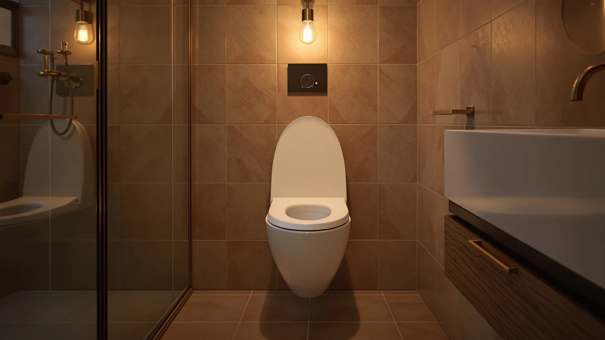

KingPavonini Raised Toilet Seat Review (2026): Worth It?
Prices and picks verified as of September 2026. Independent, reader-supported reviews.


Quick Answer
The KingPavonini Raised Toilet Seat with Handles adds roughly 3.5 to 5 inches of height and curved, padded armrests rated to support up to 500 pounds, specs that put it ahead of most riser-style seats built for seniors and people recovering from surgery. At $59.99 it costs more than a standard replacement seat, but if you only need a cushioned seat at normal toilet height rather than a full riser, the Mayfair Padded Toilet Seat below fits most bathrooms better.
Our pick: KingPavonini Raised Toilet Seat with — $59.99 Check Price on Amazon
Bottom line: our top pick is the KingPavonini Raised Toilet Seat with Handles for Elderly at $65.99.
Things to Know Before You Buy
- Raised toilet seats like the KingPavonini attach over your existing bowl and typically add 3.5 to 5 inches of height, which reduces knee and hip strain during sitting and standing.
- Weight capacity varies widely across this category. The KingPavonini's aluminum frame is rated for 500 pounds, well above the 300-pound rating common on basic plastic risers.
- Not every raised seat has armrests. Models built for support, like the KingPavonini, add curved handles, while padded comfort seats such as the Mayfair options below stay close to standard toilet height.
- Elongated and round bowl shapes are not interchangeable. Measure your existing seat before ordering, since an elongated seat will not mount securely on a round bowl.
- Price alone does not indicate durability. Verified owner reviews, where available, tell you more about long-term reliability than the sticker price does.
This KingPavonini raised toilet seat review looks at whether the extra height, curved armrests, and 500-pound weight rating justify a $59.99 price tag for anyone shopping for a toilet seat riser after surgery, an injury, or because standard toilet height has simply become uncomfortable. We compared its published specifications and construction against three established Mayfair and Bemis seats that solve a different problem: comfort and style rather than mobility support.
KingPavonini positions this seat specifically for seniors, pregnant users, and anyone in post-surgery recovery, and the spec sheet backs that framing up: a reinforced 1.4mm aluminum frame, dual crossbars, and outward-angled legs for stability, plus non-slip waterproof foam on the armrests and anti-skid rubber feet underneath. That is a different product category than a padded comfort seat, and the right pick for you depends on which problem you are actually solving.
Why You Should Trust Us
Ilane Tall covers bathroom fixtures and mobility aids for Best Toilet Seats, and every kingpavonini raised toilet seat review on this site follows the same process: we pull manufacturer specifications and pricing directly from Amazon listings, cross-check weight capacity and material claims against the product documentation, and read through verified owner reviews for patterns rather than cherry-picked quotes. We do not run a fake testing lab, and we will not claim hands-on time with a product we have not purchased. When a listing lacks a rating or review count, as is the case for several products in this comparison, we say so instead of inventing one.
Our Research Experience
We did not purchase or physically install this KingPavonini raised toilet seat for this review. Our process instead centers on comparing the manufacturer's stated specifications, the images and dimensions in the Amazon listing, and the language used across similar riser-style seats we have already covered on this site. For a product built around a static weight rating and frame construction, like this 500-pound aluminum riser, the specification sheet tells you most of what you need to know before buying, and we treat any claim we cannot verify from the listing or from owner feedback as unconfirmed rather than presenting it as our own hands-on result.
Overview & Specs

KingPavonini Raised Toilet Seat with
What we like
- 500-pound weight capacity backed by a reinforced 1.4mm aluminum frame and dual crossbars
- Curved, padded armrests with non-slip foam that help with balance while sitting or standing
- Open V-shaped frame that keeps splashes off the seat and simplifies cleaning
- Anti-skid rubber feet designed to keep the riser stable on tile and other hard flooring
Flaws but not dealbreakers
- At $59.99, it costs more than the padded or wood-veneer seats in this comparison
- No published rating or review count yet, so buyers cannot lean on owner feedback ahead of purchase
- Bulkier profile than a standard seat, which bathrooms with limited legroom may find tight
| Material | Plastic / wood |
| Size | — |
The KingPavonini Raised Toilet Seat with Handles is built for a specific job: adding height and stability to an existing toilet rather than replacing the seat with something more comfortable. Its 1.4mm aluminum frame, dual crossbars, and outward-angled legs are rated to hold up to 500 pounds, a figure well above what most flat plastic risers claim, and the design targets seniors, pregnant users, and people recovering from hip or knee surgery who need to reduce how far they bend to sit down.
The curved armrests are what separate this seat from a plain riser. They are lined with non-slip waterproof foam so wet hands do not slide during a sit-to-stand transition, and the legs sit at an outward angle for a wider base than a simple four-post frame would give. KingPavonini also swapped the typical flat crossbar for an open V-shaped frame underneath the seat, meant to keep splashes contained and make wiping the unit down faster than models with a solid crossbar. The tradeoff is price and footprint: at $59.99 it costs more than a standard seat, and the added width and height mean it will not disappear visually the way a slim comfort seat does.
What We Liked
The 500-pound weight rating on this KingPavonini raised toilet seat is well above most of the category, where riser seats typically cap out around 300 pounds. KingPavonini backs that number with a 1.4mm aluminum frame, dual crossbars, and legs angled outward for a wider stance, the kind of structural detail that actually determines whether a raised seat feels solid instead of wobbly under real weight.
The armrests do more work than they look like they should. Curved rather than straight, and wrapped in non-slip waterproof foam, they give you a grip point during the exact moment when balance matters most: the transition between sitting and standing. Anti-skid rubber feet under the frame's legs are a small addition, but on tile or vinyl flooring, a riser that shifts even slightly can undo the safety benefit the product is supposed to provide.
We also like the open V-shaped frame under the seat. Most riser seats use a flat crossbar that traps water and waste against the seat's underside, which turns cleaning into a chore. The V-frame routes splashes away instead of catching them, and an open frame is faster to wipe down than a solid one. For caregivers managing a household member's bathroom routine, that difference adds up over months of daily use.
What Could Be Better
This KingPavonini raised toilet seat has not built up a public track record yet. Amazon does not currently list a rating or review count for this ASIN, so anyone comparing it to an established seat like the Mayfair Padded Toilet Seat, which carries a 4.1-star average across more than 3,000 reviews, is doing so without the same evidence to lean on.
Price is the other factor working against it. At $59.99, it costs $11 to $22 more than the three Mayfair and Bemis alternatives we compared it against, and that premium buys structural capacity and armrests rather than comfort or style. If your bathroom does not need a 500-pound-rated riser, you are paying for capability you will not use.
The added height and width are also a genuine tradeoff. A raised seat with armrests takes up more visual and physical space than a standard seat, and in a small bathroom with limited clearance between the toilet and a wall or vanity, that extra footprint can make the room feel more cramped.
Who Is It For?
This KingPavonini raised toilet seat fits seniors managing mobility limitations, anyone recovering from hip, knee, or back surgery, pregnant users dealing with reduced flexibility, and people with a permanent need for added toilet height and arm support. If sitting down and standing up from a standard-height toilet is a physical challenge for you or someone in your household, the height, armrests, and 500-pound capacity solve that specific problem directly. Caregivers shopping for a parent or partner should also weigh how the open frame design affects daily cleanup, since that task often falls on the caregiver rather than the person using the seat.
It is a poor match for anyone shopping purely for comfort or bathroom looks. If you want a softer or better-looking seat and mobility is not a concern, the padded and wood-veneer options below are the better, cheaper fit.
Alternatives to Consider
If this KingPavonini raised toilet seat is more riser than you need, these three Mayfair and Bemis-made seats solve a different problem: comfort, potty training, or a wood-look upgrade at standard toilet height.

Editor’s Pick
Mayfair Padded Toilet Seat with
Soft vinyl over a wood core and chrome hinges make this elongated seat a comfort upgrade, and its 4.1-star average across more than 3,000 verified reviews gives it the track record the KingPavonini has not built yet.
$48.56
Check Price on Amazon
Best Value
Mayfair NextStep2 Toilet Seat with
A slow-close round seat with a magnetically stored potty training seat built in, useful for households moving a toddler out of a separate potty chair without buying two seats.
$37.79
Check Price on Amazon
Premium Choice
Mayfair Natural Oak Veneer Toilet
Made by Bemis under the Mayfair name, this round seat's oak veneer and chrome hinges give a plain bathroom a wood-look upgrade for less than a comparable riser seat costs.
$37.63
Check Price on AmazonFrequently Asked Questions
Does the KingPavonini raised toilet seat fit any toilet?
It is designed to fit standard round and elongated toilet bowls with clamp-style mounting, but you should check your bowl shape and rim dimensions against the listing before ordering, since raised seats are not universally interchangeable between round and elongated bowls.
How much height does the KingPavonini add compared to a standard toilet seat?
Raised toilet seats in this category, including the KingPavonini, typically add between 3.5 and 5 inches of height over a standard seat. That range meaningfully reduces knee and hip strain for most adults, though you should confirm the exact height against the current Amazon listing before buying.
Is the KingPavonini raised toilet seat review recommendation better than a padded comfort seat like the Mayfair?
It depends on the problem you are solving. This KingPavonini raised toilet seat review found the KingPavonini better suited to mobility support, thanks to its 500-pound capacity and armrests, while the Mayfair Padded Toilet Seat is the better choice if you want a more comfortable seat at standard toilet height.
Final Verdict
This KingPavonini raised toilet seat review comes down to matching the product to the problem. If you or someone in your household needs extra height, armrest support, and a seat rated for 500 pounds, the KingPavonini's aluminum frame and splash-guard design make it a reasonable $59.99 pick, even without a review history to back it up yet. If you want a more comfortable or better-looking seat at standard height, the Mayfair Padded Toilet Seat is the safer choice, backed by a 4.1-star average across more than 3,000 verified reviews at a lower price.